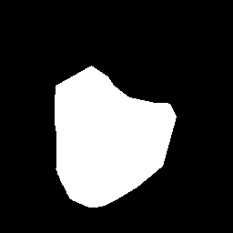
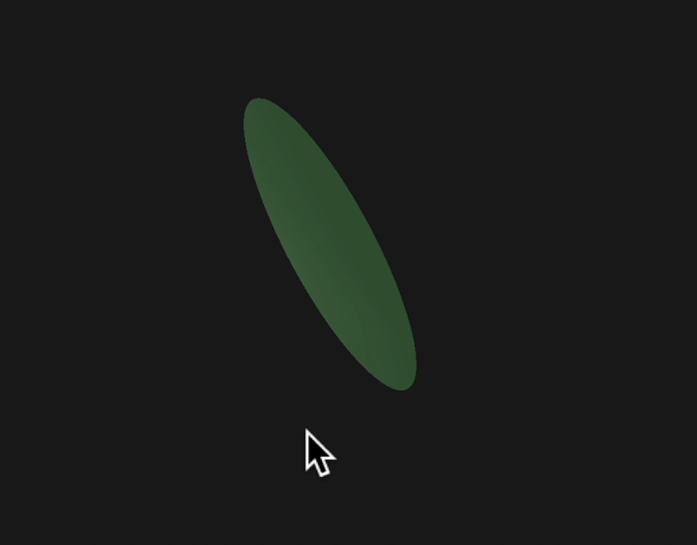

This project implements the Puffball inflation algorithm to convert hand-drawn 2D shapes into 3D models. Our pipeline consists of a Python drawing interface for creating PNG silhouettes, a Puffball implementation computing height values via grassfire distance transforms, and a C++ OpenGL renderer generating double-sided 3D surfaces from the combined PNG and CSV data. The system then produces triangular meshes suitable for shaders and textures.
Technical Approach
Overview of starting point, masks, Puffball implementation, and rendering pipeline.
Starting Point
We began from the Puffball concept paper and a clean-slate implementation (no starter code). Our inputs are hand-drawn binary masks.

Input silhouette (binary mask).
Reference: Puffball inflation method
Assets: hand-drawn 2D masks
Initial prototype. We began with a single point above our contour and connected points along the contour to that apex. While this produced a basic 3D representation, it was not the behavior or surface quality we wanted.

Early attempt: single apex connection over the silhouette.
Mask creation (existing tool). We obtain binary silhouette masks using an interactive C++ OpenCV tool from Echo’s prior project.
Workflow: open source*.png, trace a closed shape with the mouse, auto-fill interior to export mask*.png; supports batch processing.
Gradient-driven attempt. Next, we tried to implement something like Puffball by taking the gradient of our mask to obtain a contour, sampling points along the contour, and then moving those points in the direction of the gradient in time steps.
Because the gradients were imperfect, as time steps progressed, points became increasingly scattered. This made it difficult to measure when points converged and to robustly identify the medial axis (ridge points).
What We Built
Python drawing/IO to create PNG masks
Grassfire distance transform and Puffball height computation
Highlights compelling results and a high-level approach.
Technical Details
Problems Encountered
Handling non-differentiable corners and mask noise.
Balancing smoothness vs. shape fidelity.
Efficient rendering and numerical stability.
Lessons Learned
Importance of robust preprocessing for binary masks.
Sensitivity of heights to distance transform quality.
Trade-offs in real-time rendering vs. offline quality.
Algorithm Summary
Our implementation follows the core Puffball algorithm from Twarog et al.[1], which uses grassfire distance transforms to inflate 2D silhouettes into 3D shapes. The original paper defines inflation as the union of spheres placed at interior points, with sphere radii determined by distance to the nearest boundary. We implemented the practical MATLAB-based approach from Box 1 of the paper in Python, computing distance transforms and applying soft-maximum operations to generate height fields.
Algorithms: grassfire/medial axis, height field derivation, normal computation, mesh generation.
Notes: how our implementation differs or extends references.
Puffball Implementation
We compute a grassfire-based accumulation surf inside the mask, extract a height-valued medial axis transform (MAT) from low-gradient regions, and apply a soft union of spheres (softmax) centered on MAT points to obtain the final height field.
1) Grassfire accumulation to build surf
Iteratively erode the binary mask and accumulate into surf to form an interior height map.
AI usage: Used AI assistance to help draft triangle-mesh conversion scaffolding and to structure this website. Final algorithms and results remain our own work.
Conclusion
We implemented Puffball end-to-end: mask creation (Echo), height computation via grassfire and MAT (Samyak), and double-sided mesh rendering with shaders (Meghai). Key resources included the Puffball paper [1] and limited AI assistance for mesh/website scaffolding. Together these enabled robust, visually smooth, puffed 3D surfaces from simple 2D silhouettes.